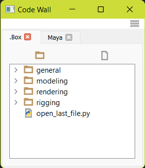
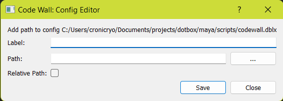
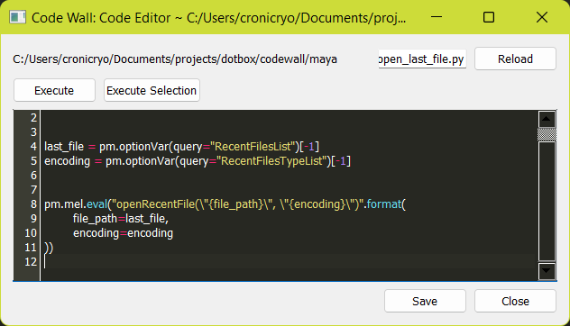

Code Wall#
Easily create a library of snippets in various locations. To run a script simply double click from within the interface. To create a script you can do this on disk ork quickly through the Code Editor
Available In:

Config#
This tool looks for all codewall.dblx files across the PYTHONPATH.
All will be loaded into the tool.
Create New Config#
Create a codewall.dblx file anywhere on the PYTHONPATH.
This file can be empty or contain:
{
"__locked__": false,
"path/to/folder": {
"label": "Tab Label",
"edit_path": true,
"edit_contents": true
}
}
Minumum Required:
{
"path/to/folder": {
}
}
- Refresh the interface from the top right menu
- See Add To Existing Config
Global Options:#
- __locked__: allows editing of the config file from the UI (default:
false)
Path Options:#
- label: Display name of the tab. (default:
paths folder name) - edit_path: allows editing/removal of the path through the UI (default:
true) - edit_contents: allows editing/removal of the folders contents through the UI (default:
true)
Add To Existing Config#
-
Underneath the config sub menu. Click the path of your new config.
- if the config is not editable it will not show up
-
This will pop open the Config Editor
Config Editor#
The editor be opened from two ways:
Menu->Config->path/to/codewall.dblxRight Click Tab->Update Settings

Label:#
The tab display name. If left blank the folder name will be used
Path:#
- absolute path: Can be a direct path to the folder
- relative path: This can be a direct path or a relative path to the current
config file
You can use theRelative Pathcheck box to automatically make it relative.
This option is useful if you keep your config and scripts together within the same folder structure.
(e.g.../relative/path/to/folder) - environment variables: Environment variables can be used within the path.
(e.g. the path can be set to$MAYA_APP_DIR/scriptsand this will point to a scripts folder under the maya directory). Variable must start with$
Code Editor#
When modifying/creating a new script from within the tool this dialog will popup.

Hot Keys#
CTRL + ENTER: Execute Selection
Executing#
- Execute: runs the entire script.
- Execute Selection: This will execute all the lines that are within the selection.
Info
Attempting to close the dialog without saving changes will prompt you to save.
Renaming the file will ask you to confirm the name change.
Warning
This will NOT be saved by CTRL + S.
Menu Options#
- Read Only: With this enabled you will be unable to drag and drop items within the interface. (i.e. This will move files around on disk.)
- Config: list all the current configs loaded into the UI. Select one to open the Config Editor.
- Refresh: reloads the interface and searches for new config files.
Context Menu Options#
Some options may not be visible based on the config
- Run: execute the selected script.
- New Folder: create a new folder at the selected path.
- New Script: create a new script at the selected path.
- Modify: open the Code Editor with the current script.
- Rename: rename the selected item.
- Delete: delete the selected item.
Deleting Items#
Deleting is PERMANENT. There is no recycle bin.
This tool has the option to Archive instead. This will create an __archive
folder in the current directory and copy items to this instead. (Currently, this does not get hidden from the interface.)
The selected item for deletion will be renamed to item_name.YYYMMDD.ext